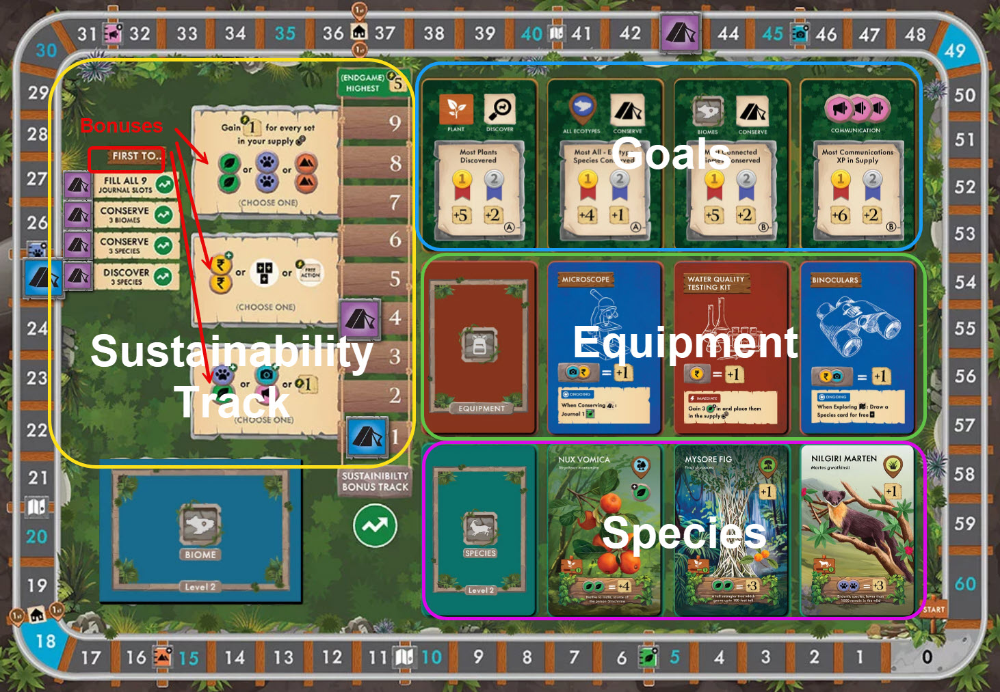
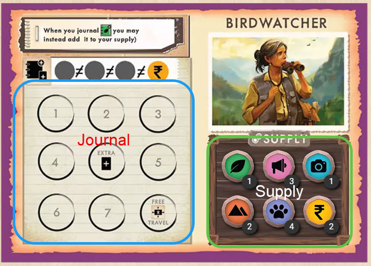

Biomesofnilgiris
Board Game Arena 官方规则文档
Main Board and Player Board
Main Board

Player Board

Game End
The game ends when a player scores 49 or more points. Play continues until the end of the round such that all players have had an equal number of turns. If the player that triggered the end of the game is the last player in the turn order, the game ends immediately at the end of that turn.
Goals
Evaluated at end of game. On the cards are what the top two players will score.
Sustainability bonus track
Player highest on this track will gain 5 extra points at end of game.
To its left are the additional bonuses you will gain as you go up the track.
To the left of that -- "First To..." - the first player to achieve the condition will also move up one on the track.
Some biome cards also ahve the Sustainability track icon (Green with white arrow). Conserving those biomes will also allow you to move up the track.
Actions
Each player gets 3 actions out of 7 possible actions per round -- Travel, Explore, Journal, Study, Equipment, Discover, and Conserve.
One of your 3 actions must be Travel. There are no restrictions on the other actions. A player is allowed to choose the same action more than once during their turn.
Travel
Move your meeple to an orthogonally adjacent space or an unexplored place to take the money (yellow icon) and flip the card over. Money is wild in this game.
Multiple players can occupy the same location.
Explore
Take a biome card and place it face down. A new biome card must be connected to two other cards and place a money on it.
Journal
Take the resource indicated on the upper right of the biome card that you are currently on and draw an equipment or species card to add to your hand.
Note that resources collected this way goes to goes to your Journal and are not immediately available.
When you fill a row in your journal with all different resources, you gain an extra money.
The middle spot of the journal award you with an extra card.
The last spot of the journal gives you a free travel action.
Study
Study action moves the resources that you have collected from your Journal to your Supply area and will be available for you to use.
Note that you must be at the Field Station to carry out the study action.
Equipment
Pay the required resources (on the left) to equip an item that is in your hand for the benefits it provides.
Discover
Check the icon on the upper-right corner of your species card. You must be on the biome with the matching symbol in order to perform this action.
The blue & white icon is wild. You can discover that from any location.
Icon below that tells you the resources you will gain when discovering the species.
The species card is then added to your tableau.
Conserve
You can conserve a biome that you are on or a species belonging to that biome (or a wild).
Pay the indicated cost (left) and receive the reward (right).
The icon above that is for objectives or expansions.